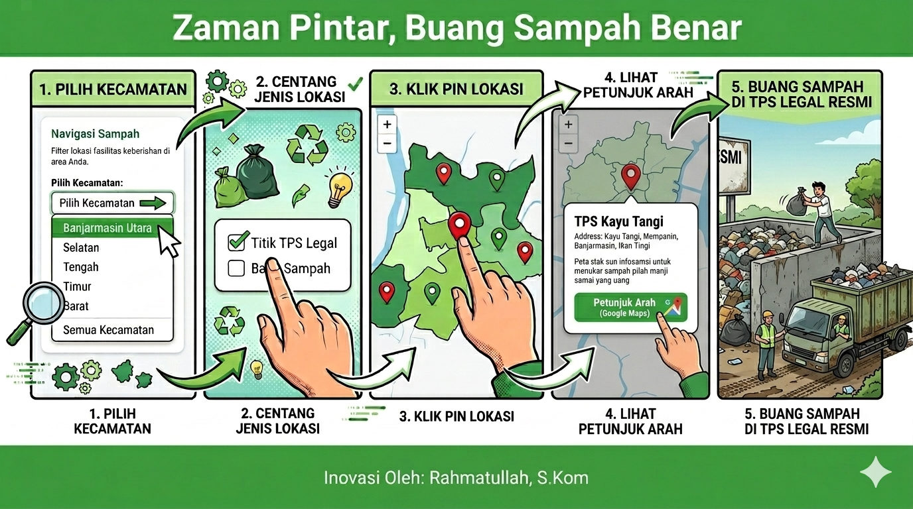
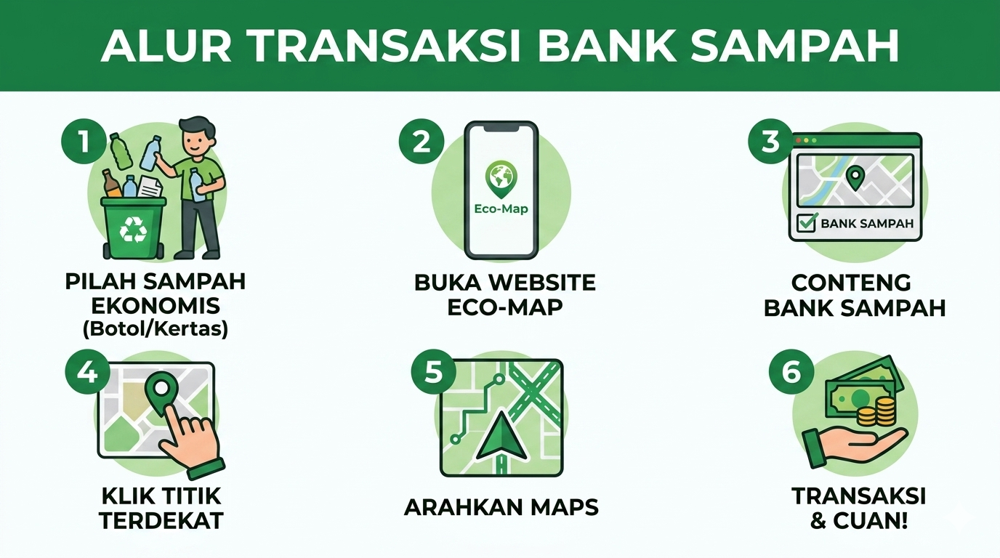

Pilih alur layanan yang ingin Anda gunakan untuk Banjarmasin lebih bersih.

Cara menemukan tempat pembuangan sampah resmi sesuai jam operasional (20.00-06.00 WITA).

Cara memilah sampah dari rumah dan menukarnya menjadi saldo ekonomi sirkular.
Laporkan keresahan yang merugikan masyarakat seperti pembuangan sampah ilegal.